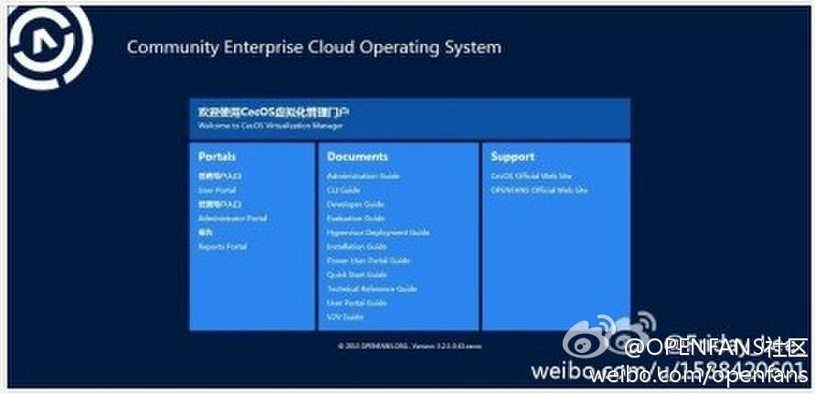

//@OPENFANS社区:@开源力量 @CSDN_CODE @Ada李力 @LUPA开源社区 @红薯OSChina@OPENFANS社区:2013年11月6日，CecOS 1.1 正式发布啦！新版本不再继承CecOS 1.0，而是将CecOS中的开放式虚拟化平台拆分出，作为独立的CecOSvt组件安装于CecOS框架。CecOS是OPENFANS为企业提供开源云计算解决方案的基础框架；CecOSvt是一款运行在CecOS上的虚拟化开放式解决方案。详情登陆官网：网页链接 
2012年10月底，CSDN开始推“社区之星”栏目，并于一年前的今天发表了第一篇专访文章《专访魏子钧：喧嚣后的HTML5和JavaScript将长存》，时光荏苒，至今天“社区之星”已经一周岁了！－ 36篇文章，记录了IT技术人员的经历和感悟。 网页链接
现在你还有这样的挑战吗？[呵呵]//@张大胖搞It: 一年前做的这期采访，转瞬间一年过去了，物是人非。当初每周一刊的采访既充实又有挑战，灰常有意思。最后祝越做越好。@Ada李力:2012年10月底，CSDN开始推“社区之星”栏目，并于一年前的今天发表了第一篇专访文章《专访魏子钧：喧嚣后的HTML5和JavaScript将长存》，时光荏苒，至今天“社区之星”已经一周岁了！－ 36篇文章，记录了IT技术人员的经历和感悟。 网页链接
CSDN的版主们和博客专家也会借大会一聚。@CSDN移动:【MDCC：为移动开发者服务！】11月13-14日的MDCC2013移动开发者大会将聚焦“如何为移动开发者服务”，如何满足移动开发者的刚需。今年将推出别具特色三大活动，汇聚国内外主流的开发工具服务公司，让参会者“一看、二聊、三聚”，认识更多同道之人。[din推撞][ppb鼓掌]网页链接
砖家逻辑//@AndyPan童鞋: 我大一的时候有次到了天津大学食堂，门口有现场做鸡蛋摊煎饼的爷儿们。有个女大学生还价“鸡蛋多少钱？”“1块”“饼多少钱？”“5毛”“那为啥卖两块？！”“我白给你摊啊?!” 记忆犹新，至今仍可以解释专家的逻辑。@陈亮途Hugo:#营销#很多人说苹果产品赚取暴利，我不明白为什么他们总是看产品成本，企业还有其他成本啊！品牌卖的是价值、达成的是市场。除非是寡头垄断，否则一切在市场上赚到的都不是暴利。这些价值，就是营销创造出来的！ 我在:华夏西路
遇到刷屏或恶意用户，大家第一时间想到的还是验证码。真是出现了机器能过，正常用户不能过的现象。够傻的。//@徐宥箴1: 做复杂验证码的都是傻子。机器能过，正常用户不能过。机器是高于低端用户的 //@西西福厮:我现在做手机验证码的时候是会把108lobdqtc这几个字母彻底排除掉---:该账号因被投诉违反《微博社区公约》的相关规定，现已无法查看。查看帮助 网页链接
回复@我是你的主题曲哥哥:社区之星采访人选不局限于CSDN社区所推荐的，可以采访IT圈中有趣，有故事的人，范围很大。@孟迎霞 @刘江总编 @高山_CSDN @CSDN-楠楠 //@我是你的主题曲哥哥:现在还在做这个栏目，最苦恼的问题不是采访的沟通上，而是采访没有好的候选人。@Ada李力:2012年10月底，CSDN开始推“社区之星”栏目，并于一年前的今天发表了第一篇专访文章《专访魏子钧：喧嚣后的HTML5和JavaScript将长存》，时光荏苒，至今天“社区之星”已经一周岁了！－ 36篇文章，记录了IT技术人员的经历和感悟。 网页链接
回复@难得优雅:欢迎自荐[呵呵] //@难得优雅:来采访我或者我的同事吧 //@Ada李力:回复@我是你的主题曲哥哥:社区之星采访人选不局限于CSDN社区所推荐的，可以采访IT圈中有趣，有故事的人，范围很大。@孟迎霞 @刘江总编 @高山_CSDN @CSDN-楠楠@Ada李力:2012年10月底，CSDN开始推“社区之星”栏目，并于一年前的今天发表了第一篇专访文章《专访魏子钧：喧嚣后的HTML5和JavaScript将长存》，时光荏苒，至今天“社区之星”已经一周岁了！－ 36篇文章，记录了IT技术人员的经历和感悟。 网页链接
//@我是你的主题曲哥哥:从没求什么名人，只求经验丰富、经历精彩的人，但苦于没有稳定可靠的推荐源。采访过你，觉得很不错，想必你圈子里的也都是牛人，要不推荐个？ //@沈逸_程序员在囧途_创办者:深入基层嘛民间有很多有故事的人，不一定要知名人物@Ada李力:2012年10月底，CSDN开始推“社区之星”栏目，并于一年前的今天发表了第一篇专访文章《专访魏子钧：喧嚣后的HTML5和JavaScript将长存》，时光荏苒，至今天“社区之星”已经一周岁了！－ 36篇文章，记录了IT技术人员的经历和感悟。 网页链接
我这么写，也等于是给自己挖了个坑。我在微信上发的全是吃喝，锻炼，家庭八卦类的信息。@Ada李力:找到适合的#社区运营#，一个重要方式是了解这人业余时间在做什么。业余时间常做的事情，才是这人真正喜欢的事情。— 所以，面试环节可以加入这样的问题: 平时泡什么网站，休闲时常和谁一起玩。
赞同这句话的估计都是自认有知识有文化的人啰？@龚文祥:这个世界是奇妙的，你说那些传统企业老板，个个赚了钱几千万上亿的、老江湖、见过市面，这些成功者偏偏整天被集资传销骗、被成功学骗、被微信培训骗；而微博上从不被这些骗的人，什么常识都懂，又都不是财富的成功者，都是高级打工仔。世界真平衡，有知识文化的赚不到钱。没文化容易成为亿万富翁。
回复@lvxinke: //@lvxinke:这个很正常吧，我写的不少微博，已经发现好几位对号入座，并且取消关注，是否拉黑，无从考证。淡然啦，人在这世界上，首先取悦自己，顺便才是取悦部分他人。@Ada李力:因为发微博，已经得罪了不少人。有些人有对号入座的习惯。— 解决办法就是不要看俺的微博，欢迎拉黑。
回复@qyjohn_: //@qyjohn_:对号入座说明对方很在乎自己在别人眼里的形象。不过取消关注不一定是对某个人有反感，可能仅仅是觉得这个人发的信息太多或者是太少。我经常性的清理自己的关注列表，主要是不想在微博上花太多时间。@Ada李力:因为发微博，已经得罪了不少人。有些人有对号入座的习惯。— 解决办法就是不要看俺的微博，欢迎拉黑。
最右//@池建强:1是，2太有哲理了…… //@朴灵: 太有哲理了 //@老赵:太有哲理了…… //@左耳朵耗子: 你说话也太有哲理了…… //@寒冬winter: 我是觉得，不管站在珠峰还是海平面，都不会影响一个人的身高的……---:抱歉，作者已设置仅展示半年内微博，此微博已不可见。
 网页链接
网页链接